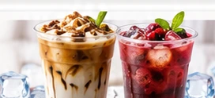
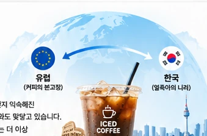

젊은 세대는 새로운 메뉴를 시도하는 데 적극적입니다.
글로벌 트렌드 리포트뜨거운 유럽도
ICED COFFEE뜨거운 유럽도
‘ICE’에 빠졌다
에스프레소의 본고장 유럽에서
아이스커피가 빠르게 대중화되고 있습니다.
EUROPE'S ICED COFFEE BOOM · COFFEE TREND
📈유럽 아이스커피
판매 급증
판매 급증
👥영국인 32%
아이스커피 즐겨
아이스커피 즐겨
❄️한국은 이미
사계절 ICE
사계절 ICE
🌍글로벌 커피 문화
새로운 전환점
새로운 전환점
01
유럽서 판매 급증
에스프레소만 마시던 유럽인들, 요즘은 ‘아이스커피’
따뜻한 커피가 익숙한 유럽에서 아이스커피 판매가 빠르게 늘고 있습니다.
유럽 주요국 아이스커피 판매 증가율전년 대비 · 2~8월
출처: 룩셈부르크 시장조사업체 파이어(Fyre) · 2~8월 아이스커피 판매량 전년 대비 증가율 (제공된 원고 기준)
02
틈새에서 대중으로
영국인 3명 중 1명
아이스커피를 즐긴다
32%
영국 소비자 ‘아이스커피 즐긴다’♧ ♧
55+
젊은 층 넘어
55세 이상
구매도 증가
🥤 시럽·과일향은 물론 단백질까지. 아이스커피 메뉴도 빠르게 다양해지고 있습니다.
출처: 닐슨아이큐(NIQ) ‘2027 음료 시장 보고서’ · 영국 소비자 설문 (제공된 원고 기준)
03
왜 갑자기?

젊은 취향 + SNS + 더워진 유럽
색감과 비주얼이 강한 아이스 음료가 빠르게 퍼졌습니다.
올해 여름 서유럽은 관측 이래 가장 더운 여름을 보냈습니다.
04
한국은 이미 사계절 ICE
한겨울에도 커피 10잔 중 6잔은 아이스
유럽에선 새 트렌드지만, 한국에선 계절을 타지 않는 일상입니다.
❄️
60%
한겨울 아이스커피비중
☀️
97%
대서에는 아이스커피비중이 97%까지
출처: 메가MGC커피 · 지난해 전국 약 4,000개 매장, 커피 주문 약 4억 건 분석 (제공된 원고 기준)
05
커피 공식이 바뀐다
뜨거운 커피의 본고장에도
‘ICE’가 일상이 됐다
‘ICE’가 일상이 됐다
얼죽아
‘얼어 죽어도 아이스 아메리카노’. 한국에서 먼저 익숙해진 이 소비 방식이 이제 유럽의 커피 문화 변화와도 맞닿고 있습니다.
기후와 세대 취향이 만나면서, 아이스커피는 더 이상 여름철 메뉴에만 머물지 않고 있습니다.

🌡️ 기후 변화＋👥 세대 취향 변화＋☕ 글로벌 커피 문화 확산→ 아이스커피는 전 세계의 일상이 되어가고 있습니다.